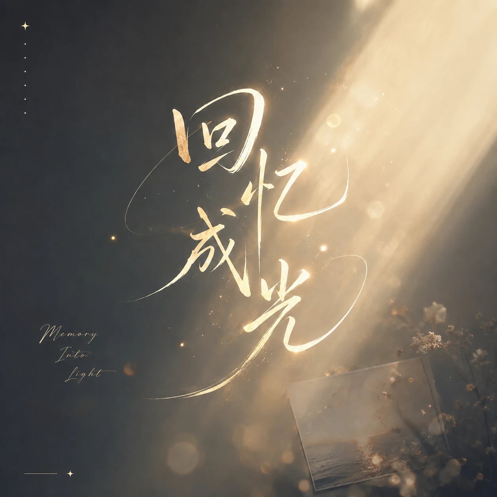
《回忆成光》
第二首单曲 · 2025 年 7 月首演
乐队第一首搬上舞台的原创。灵感来自毕业留子们很日常、却永远不想面对的离别——出国时与家乡告别，毕业后各奔东西，工作后又因生活再次分别。「人生是场远航，各自有方向，能并肩同往一程已足够珍藏。」2026 年中作为第二首单曲发布。
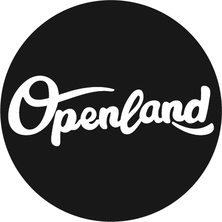
Openland 旷野乐队New Jersey Independent Band
曲风多变的新泽西独立乐队。一群热爱音乐的工作党，从爵士翻唱走到自己的原创世界。
About
2024 年初，一群在美国新泽西、热爱音乐的工作党组成了乐队。一开始以翻唱爵士风格的歌为主，也会积极尝试别的风格。同年夏天，他们在 Highland Park 的 Penstock Coffee 录下乐队首支 Live Video Cover《亲密爱人》，随后又登上公园草坪前的大舞台，把《亲密爱人》、Fly Me to the Moon、City of Stars 等曲目带到户外。
正如他们后来在歌里写下的：「有这么一群志同道合的人向着一个目标努力，只要坚持下去，总能实现不敢想的事。」
2025 年 7 月，乐队把第一首原创《回忆成光》搬上了舞台：「前进吧 别感伤 回忆会化成光 照亮前方。」到了 2026 年，Openland 旷野乐队的脚步仍在继续。
同年 4 月，第一首单曲《Waiting For You》在网易云、Spotify、Apple Music、YouTube Music 发行；年中又发布了第二首单曲《回忆成光》，并陆续写出《Shall I Stay》《我的心》等新作。目前的计划，是把全部 10 首原创都录出来、全平台发布。11 月 21 日在纽约 The Delancey 的这场原创专场，将是他们把这些作品带到 live house 的一次收尾与开始。
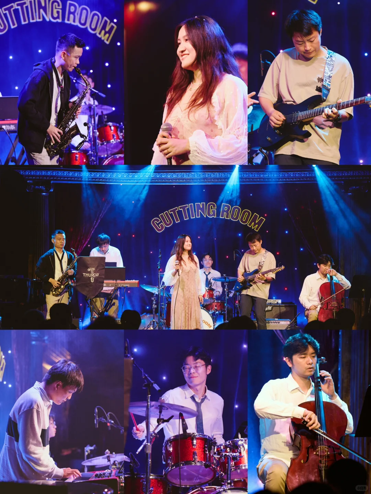
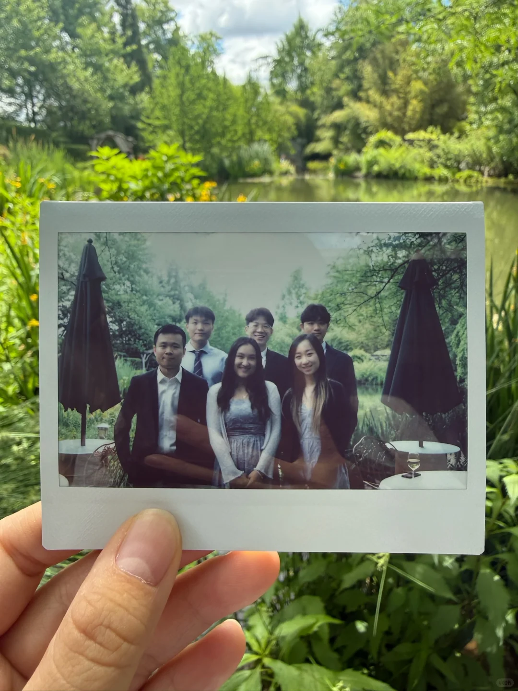
「有这么一群志同道合的人向着一个目标努力，只要坚持下去，总能实现不敢想的事。」
Originals
从第一首搬上舞台的《回忆成光》，到多平台发行的首单，再到写给异乡与内心的新作。各平台搜索 Openland 即可收听已发行曲目。
收听已发行单曲
Openland 旷野乐队
歌词
占位歌词，正式歌词即将上线

第二首单曲 · 2025 年 7 月首演
乐队第一首搬上舞台的原创。灵感来自毕业留子们很日常、却永远不想面对的离别——出国时与家乡告别，毕业后各奔东西，工作后又因生活再次分别。「人生是场远航，各自有方向，能并肩同往一程已足够珍藏。」2026 年中作为第二首单曲发布。

第一首单曲 · 2026 年 4 月发行
Openland 旷野乐队发行的第一首单曲，也在 2 月「清武飞扬」新春联欢会上预先唱给过现场。对一支 2024 年初才开始玩乐队的新泽西打工人组合来说，把一首自己的歌发行到各平台，是「当初没敢想」的事。
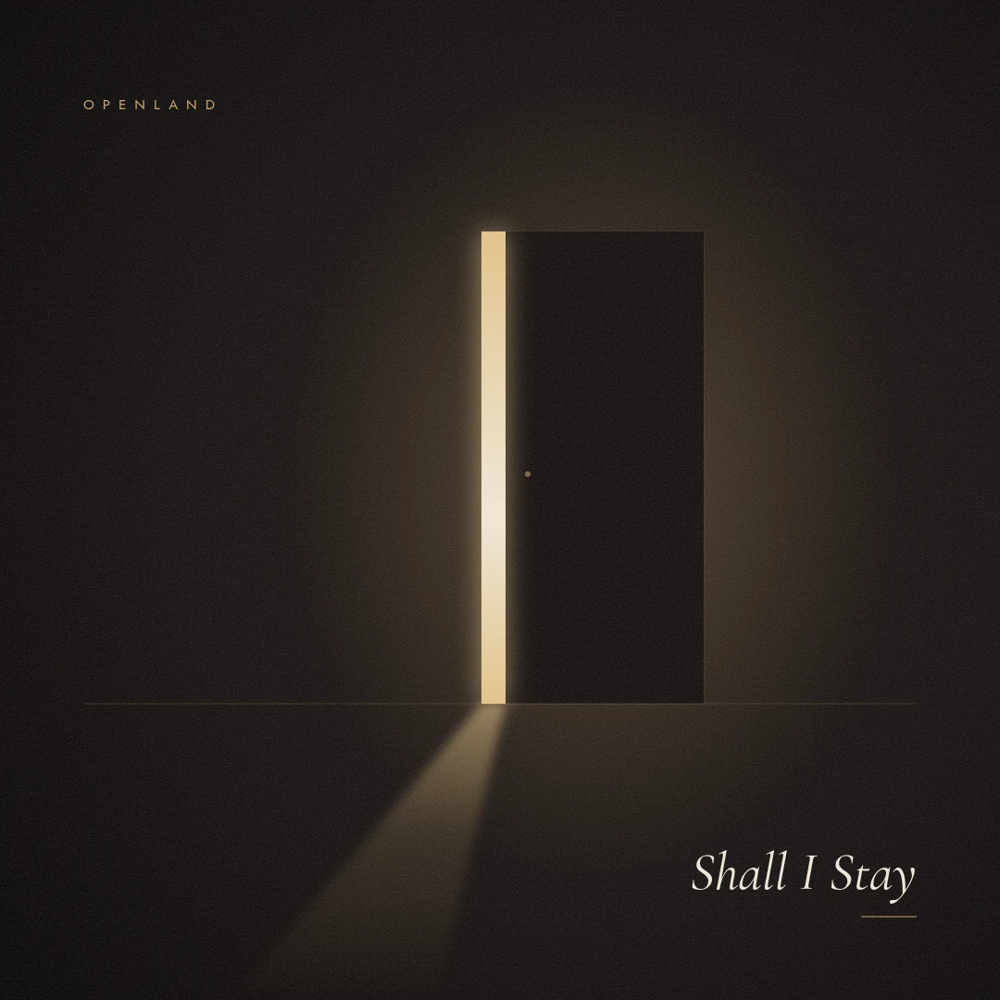
原创 · 关于「不属于这里」
一首关于归属的歌。身在异国他乡，一切充满着不确定性；早已习惯这里的生活，却仍会问：是留下还是离开，哪里才是家，又该去哪里寻找自己的位置。这些困惑，被写进了这首作品里。

原创小情歌
主唱有感而发写下的原创小情歌。11 月 21 日的纽约原创专场上，它将和更多风格各异的新作一起，被带到 The Delancey 的舞台。
Highlights
从公园草坪到纽约 live house，从婚礼现场到第一首单曲发行。时间由近及远，带视频的卡片可以直接在网页里播放，每张卡片也都能回到当年的小红书笔记。
NJ 打工人乐队的第一个原创专场。近两小时、10 首风格各异的原创作品，好友盲盒乐队 TheBlindBox 特邀开场。免费入场，Check-in 5:00 pm，演出 5:15–7:15 pm。地址 168 Delancey St, New York, NY 10002。到现场请跟场地说是来看 Openland。
在小红书观看

5 月 3 日，Openland 旷野乐队参演厦门大学 × 华南理工大学校友会联合春游会，在中央公园以民谣版本唱了《亲密爱人》《春风十里》《那些花儿》和 Yellow。6 月下旬又前往 Fort Lee 的 Overpeck County Park，为校友会 2026 联合野餐暨文化节带来方大同的《爱爱爱》和《特别的人》。
春游会笔记 野餐文化节笔记
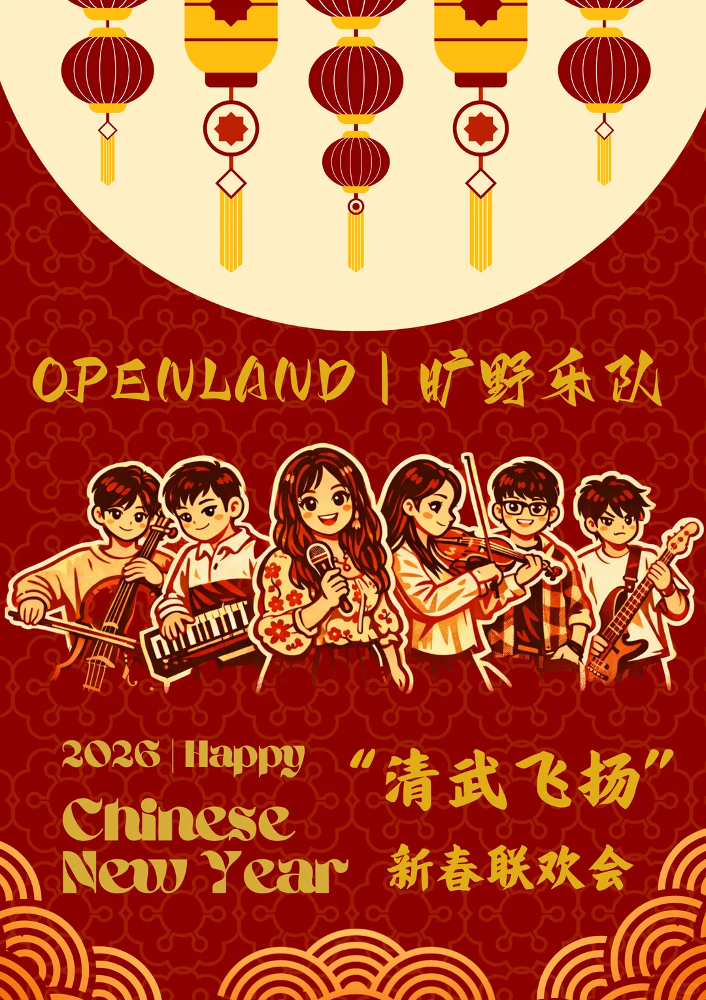
感谢梦响计划与饭团外卖联合筹划，在布鲁克林举行音乐美食博主联欢会。当天带来四首经典翻唱：两首中文歌《月牙湾》《特别的人》，两首英文歌 Can’t Take My Eyes Off You、If I Ain’t Got You。
在小红书观看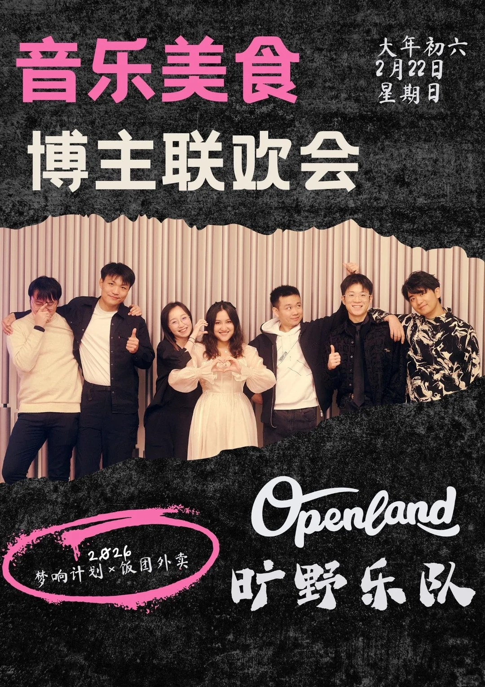
乐队终于把首个原创搬上了舞台。「前进吧 别感伤 回忆会化成光 照亮前方。」——《回忆成光》。摄像 长弓影视、Chris Y Photography、下班别走；剪辑 Sakura。
小红书原帖 ↗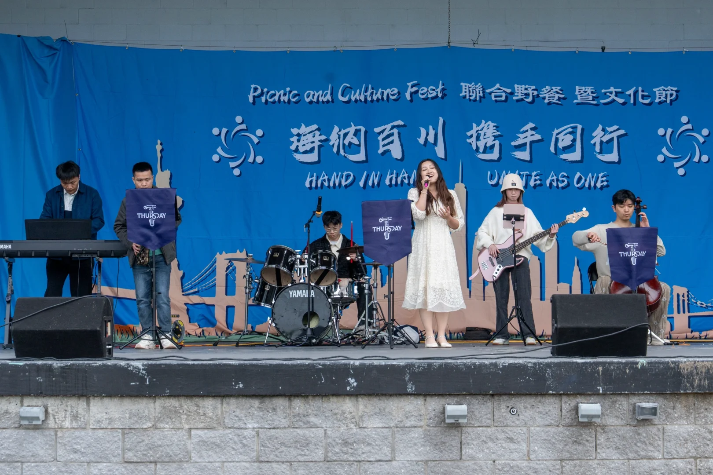
盛夏如期而至，乐队登上公园草坪前的大舞台。曲目包括《亲密爱人》、Fly Me to the Moon、Try Everything、Rise Up、《这世界那么多人》、City of Stars。成员特写与合照，记下了那笔珍贵的回忆。
在小红书观看
The Band
现任成员与特邀嘉宾。


最擅长自拍的鼓手哥

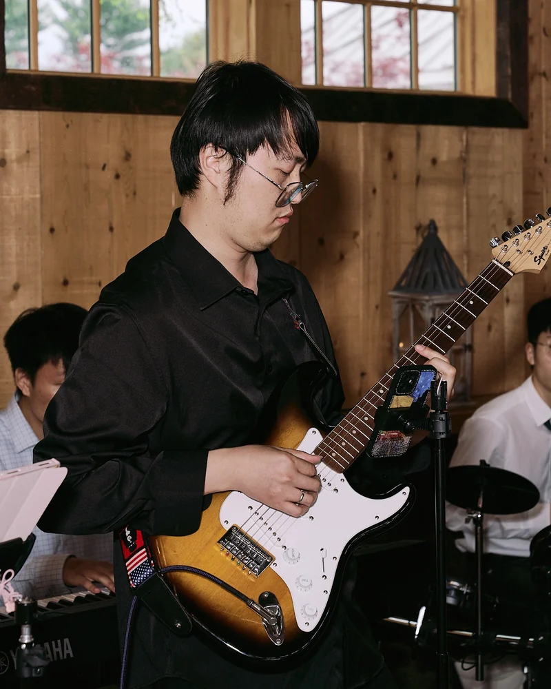
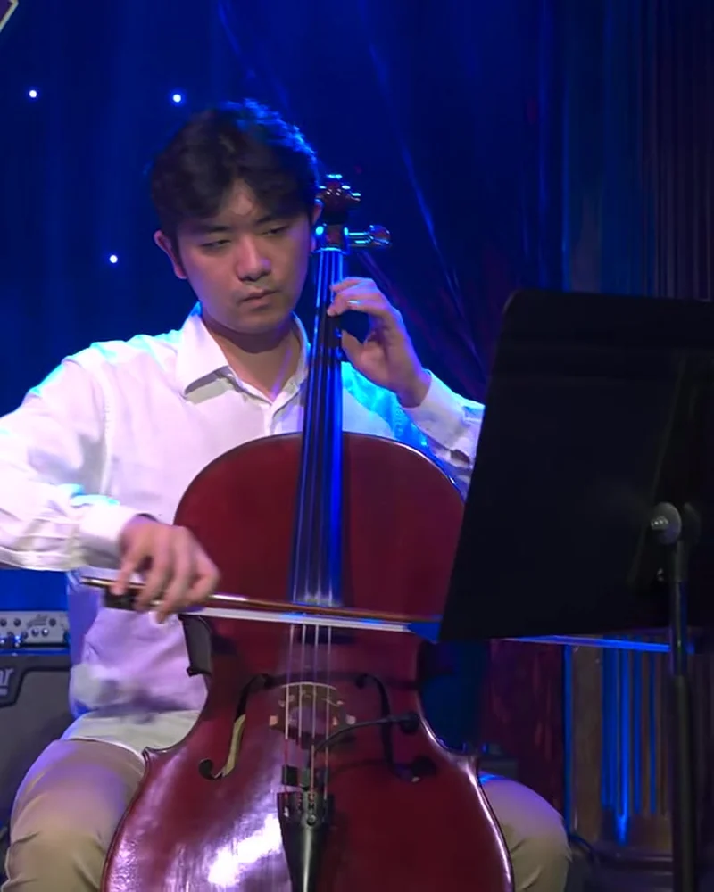
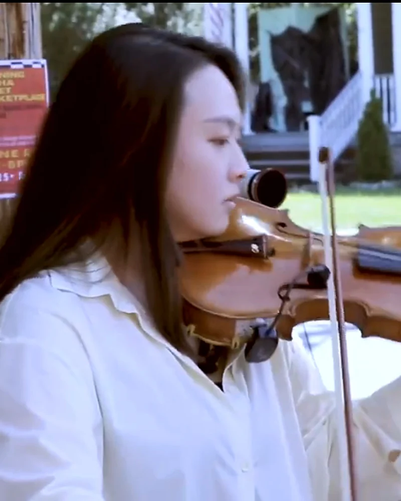

曾经的伙伴：宇翔（吉他）
阳光、草地和音乐，2024 夏日公园演出的片刻。


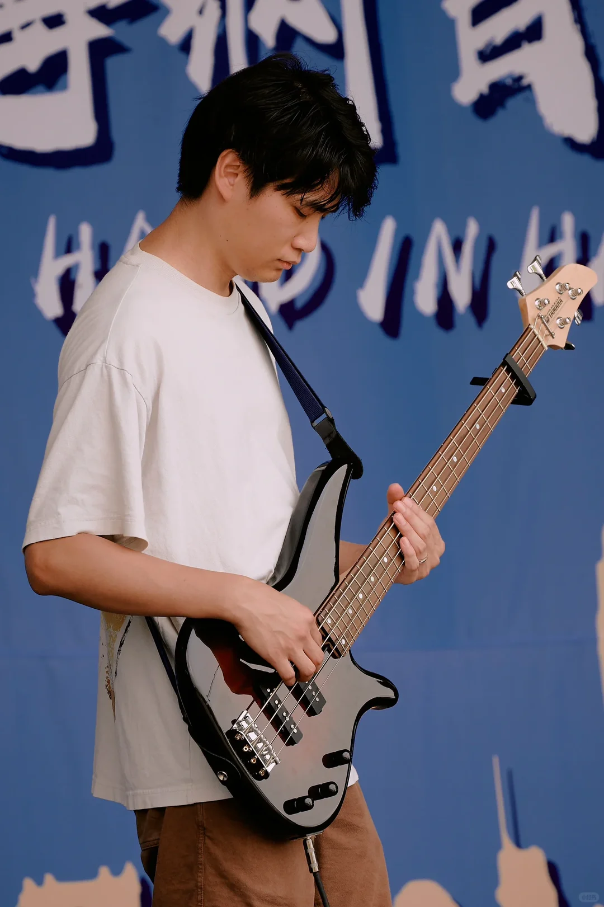
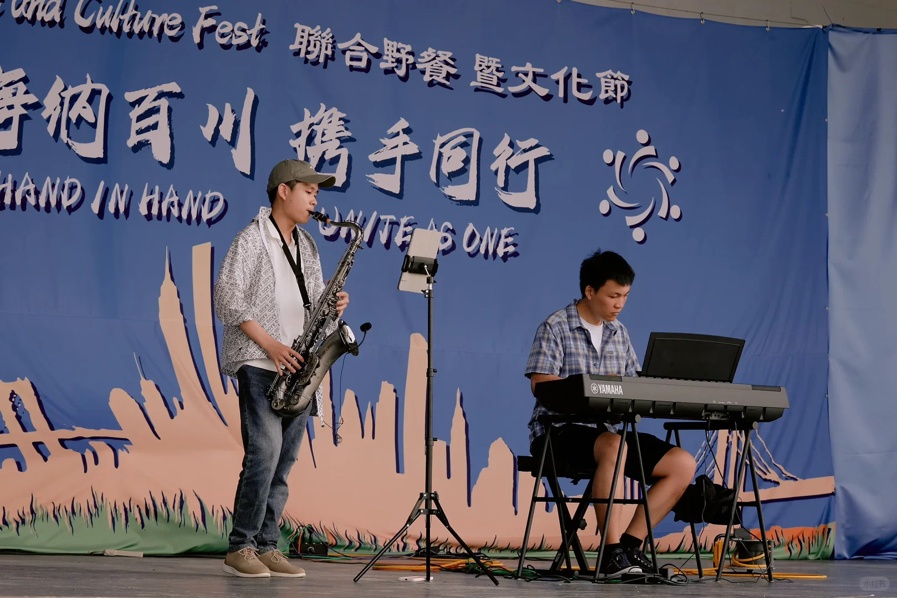
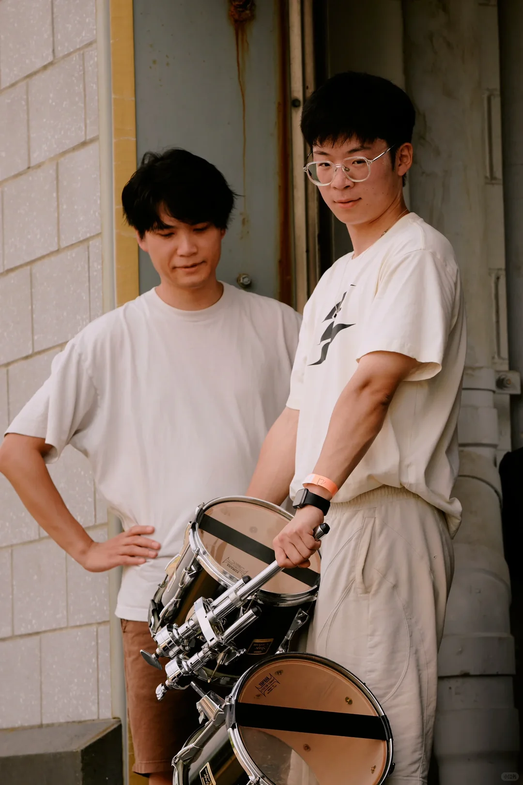


2024 年夏天，在新泽西 Highland Park 的 Penstock Coffee 录下的两支视频：一首早期翻唱，和乐队的首个 Live Video Cover。